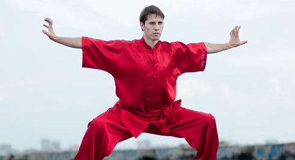

Time inexorably flies forward and now we go to the finish line of our 100 Days Workout training program! There is only a week of training left until the end, but if you are ready to test your strength and want to break the uniformity of circles, then we will give you this opportunity! Yesterday was the last day of the ADVANCED block and today we are starting the TURBO block!!!
However, according to the tradition, first let's sum up what we have learned in the past 7 days. Firstly, we tried the new plyometric technique, secondly we discovered the basic principles of any training program, thirdly we reviewed training programs from the internet and tried to develop our own, and fourthly we learned that the periodization is not so difficult as it might seem at the first glance.
!!! The TURBO block is the QUINTESSENCY of the program. Unlike the usual training week, you will have 7 days of training ahead of you. Each of them will not be similar to the previous one, and the training load will be constantly increasing!
We want to remind you that the TURBO block is designed for those who have already reached a certain level and want to challenge themselves. For those who have easily passed all the techniques of the ADVANCED level and want to try something new.
For the rest, the training load of the TURBO block might be too high, so you can try, but if you will realize that you don’t keep up, then don’t be afraid to return to your regular circles or sets training.
So, after the warm-up you perform the following exercise, known as "horseman" (same as "cadeira" from capoeira, "mabu" from wushu, "kiba-dachi" from karate and etc.):

We tried hard to find a good video of this exercise on the Internet, but we had no luck, so you have to look at the picture above and read the detailed text description below. Position your feet approximately 2 times of shoulder width apart, keep your body straight. Now make a crouch parallel to the floor (with the angle of 90-degree in the knees). Keep your body straight, turn your toes slightly out, the back arch should be natural, the arms can be extended forward (that’s easier) or on the chest (that’s more difficult). In this position, you should stand 30-60 seconds. Consider that it was a continuation of the warmup.
Now wait until the breathing is fully recovered, then proceed to the following complex:
1. Push-ups - 4 repetitions
2. Lunges - 2 repetitions for each leg
3. Pull-ups - 1 repetition
This 3 exercises will make 1 circle. All exercises are executed without rest in between and at a steady pace, one after another, a circle after a circle. 10 minutes for women, 15 minutes for men. If, at some point, you feel that you become exhausted (with respect to breathing or to muscles), give yourself time to recover and then continue.